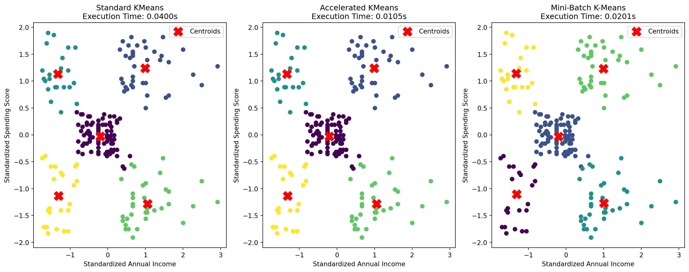

Clustering in machine learning is a technique used to group similar data points based on certain features or characteristics. The primary goal is to find patterns, structures, or natural groupings within the data without explicit labeling. Unlike supervised learning where the algorithm is trained on labeled data, clustering is an unsupervised learning approach that aims to discover inherent structures in the absence of predefined categories.
Clustering is crucial for identifying hidden patterns and structures within datasets. By organizing data points into clusters, the algorithm can reveal similarities and dissimilarities, making it easier to understand complex relationships within the data. This aids in pattern recognition, helping analysts and researchers make sense of large and unstructured datasets. Clustering plays a pivotal role in exploratory data analysis. It allows data scientists to gain insights into the distribution of data and discover natural groupings, facilitating the identification of trends, outliers, and anomalies. Clustering is particularly valuable when dealing with high-dimensional data, enabling the extraction of meaningful information from intricate datasets.
Types of Clustering
The fundamental goal of clustering is to organize data points into clusters or groups such that entities within the same cluster are more similar to each other than to those in other clusters. This aids in categorizing and understanding data, revealing relationships that might not be apparent through manual inspection. Clustering aims to unveil patterns, structures, or trends within the data that might be indicative of underlying relationships or phenomena. Identifying inherent patterns contributes to a better understanding of the data’s intrinsic organization, facilitating decision-making and pattern recognition.
Partitioning Clustering:
Partitioning algorithms divide the dataset into distinct non-overlapping subsets or clusters. The most well-known example is K-Means. Partitioning methods are computationally efficient and suitable for large datasets, making them widely used in practice.
KMeans
KMeans is a popular unsupervised machine learning algorithm used for clustering. The goal of KMeans is to partition a dataset into K clusters, where each data point belongs to the cluster with the nearest mean. It’s an iterative algorithm that aims to minimize the sum of squared distances between data points and the centroid of their assigned cluster.
Given a dataset with n data points {x1, x2,…,xn} in d-dimensional space and K clusters, the goal is to minimize Inertia, also known as the within-cluster sum of squares, is the metric KMeans aims to minimize. It quantifies the compactness of the clusters. A lower inertia indicates that the data points in each cluster are closer to their centroid.
It is given by the following objective function: J=∑i=1n min ∣∣xi −μj∣∣2
Where: J is the sum of squared distances (inertia) between data points and their assigned cluster centroids. ∣∣xi −μj∣∣2 is the Inertial, the squared Euclidean distance between data point xi and cluster centroid μj.
The KMeans algorithm can be described as follows,
Initialization: Randomly select K data points from the dataset as initial cluster centroids.
Assignment: Assign each data point to the cluster whose centroid is closest.
Update Centroids: Recalculate the centroids as the mean of all data points in the cluster.
Repeat: Repeat steps 2 and 3 until convergence (when centroids no longer change significantly) or a specified number of iterations is reached.
The centroids can be initialized in different ways and can impact the performance of the algorithm, convergence and the final results. Common methods include,
Random Initialization: Randomly select K data points as initial centroids.
KMeans++ Initialization: A smarter initialization method that spreads initial centroids apart to improve convergence speed.
Centroids initialization is a crucial step, as poor initialization may lead to suboptimal solutions or slow convergence. KMeans++ is often preferred for better performance.
We will implement KMeans clustering on the Mall Customers dataset and discuss the different steps along with visualizations of the data.
import numpy as npimport pandas as pdimport matplotlib.pyplot as pltimport seaborn as snsfrom sklearn.cluster import KMeans# Load the Mall Customer Segmentation Datamall_data = pd.read_csv('mall_customers.csv')# Display the first few rows of the datasetprint(mall_data.head())
CustomerID Gender Age Annual Income (k$) Spending Score (1-100)
0 1 Male 19 15 39
1 2 Male 21 15 81
2 3 Female 20 16 6
3 4 Female 23 16 77
4 5 Female 31 17 40
Now let’s perform exploratory data analysis (EDA) on the data to understand the underlying data distribution and outliers if any. We load the Mall Customer Segmentation dataset and conduct a preliminary exploration. The info() method provides information about the dataset, including the data types and missing values. The describe() method offers summary statistics, such as mean, standard deviation, minimum, and maximum values. The pairplot from Seaborn generates scatterplots for all pairs of features, differentiated by gender. This aids in understanding the relationships between different features and identifying potential patterns.
import pandas as pdimport matplotlib.pyplot as pltimport seaborn as sns# Display basic information about the datasetprint(mall_data.info())# Summary statisticsprint(mall_data.describe())# Visualize the distribution of featuressns.pairplot(mall_data, hue='Gender', palette='viridis')plt.show()
Feature scaling ensures that all features contribute equally to the clustering process. In this step, we select the ‘Annual Income (k$)’ and ‘Spending Score (1-100)’ columns, which are relevant for clustering. The StandardScaler is then used to standardize (normalize) these features, transforming them to have zero mean and unit variance. This step is crucial for KMeans, as it is sensitive to the scale of features.
from sklearn.preprocessing import StandardScaler# Select relevant featuresX_mall = mall_data.iloc[:, [3, 4]]# Standardize the featuresscaler_mall = StandardScaler()X_mall_scaled = scaler_mall.fit_transform(X_mall)
The Elbow method helps us determine the optimal number of clusters (K). It involves running KMeans with different values of K and plotting the inertia (within-cluster sum of squares) against the number of clusters. The “elbow” in the plot represents a point where the rate of decrease of inertia slows down, suggesting an optimal value for K.
from sklearn.cluster import KMeans# Finding the optimal number of clusters (k) using the Elbow methodinertia_mall = []for i inrange(1, 11): kmeans_mall = KMeans(n_clusters=i, random_state=42) kmeans_mall.fit(X_mall_scaled) inertia_mall.append(kmeans_mall.inertia_)# Plot the Elbow methodplt.plot(range(1, 11), inertia_mall, marker='o')plt.title('Elbow Method for Optimal k (Mall Data)')plt.xlabel('Number of Clusters (k)')plt.ylabel('Inertia')plt.show()
/home/priya/miniconda3/lib/python3.11/site-packages/sklearn/cluster/_kmeans.py:1416: FutureWarning:
The default value of `n_init` will change from 10 to 'auto' in 1.4. Set the value of `n_init` explicitly to suppress the warning
/home/priya/miniconda3/lib/python3.11/site-packages/sklearn/cluster/_kmeans.py:1416: FutureWarning:
The default value of `n_init` will change from 10 to 'auto' in 1.4. Set the value of `n_init` explicitly to suppress the warning
/home/priya/miniconda3/lib/python3.11/site-packages/sklearn/cluster/_kmeans.py:1416: FutureWarning:
The default value of `n_init` will change from 10 to 'auto' in 1.4. Set the value of `n_init` explicitly to suppress the warning
/home/priya/miniconda3/lib/python3.11/site-packages/sklearn/cluster/_kmeans.py:1416: FutureWarning:
The default value of `n_init` will change from 10 to 'auto' in 1.4. Set the value of `n_init` explicitly to suppress the warning
/home/priya/miniconda3/lib/python3.11/site-packages/sklearn/cluster/_kmeans.py:1416: FutureWarning:
The default value of `n_init` will change from 10 to 'auto' in 1.4. Set the value of `n_init` explicitly to suppress the warning
/home/priya/miniconda3/lib/python3.11/site-packages/sklearn/cluster/_kmeans.py:1416: FutureWarning:
The default value of `n_init` will change from 10 to 'auto' in 1.4. Set the value of `n_init` explicitly to suppress the warning
/home/priya/miniconda3/lib/python3.11/site-packages/sklearn/cluster/_kmeans.py:1416: FutureWarning:
The default value of `n_init` will change from 10 to 'auto' in 1.4. Set the value of `n_init` explicitly to suppress the warning
/home/priya/miniconda3/lib/python3.11/site-packages/sklearn/cluster/_kmeans.py:1416: FutureWarning:
The default value of `n_init` will change from 10 to 'auto' in 1.4. Set the value of `n_init` explicitly to suppress the warning
/home/priya/miniconda3/lib/python3.11/site-packages/sklearn/cluster/_kmeans.py:1416: FutureWarning:
The default value of `n_init` will change from 10 to 'auto' in 1.4. Set the value of `n_init` explicitly to suppress the warning
/home/priya/miniconda3/lib/python3.11/site-packages/sklearn/cluster/_kmeans.py:1416: FutureWarning:
The default value of `n_init` will change from 10 to 'auto' in 1.4. Set the value of `n_init` explicitly to suppress the warning
Having determined the optimal K, we apply the KMeans algorithm to the standardized features. The fit method calculates the clusters and assigns each data point to a cluster. The resulting cluster labels are added to the original dataset. To understand the impact of different initializations of centroids we visualize the clusters with ‘KMeans++’ initialization, random initiliazation and custom initialization.
import pandas as pdimport matplotlib.pyplot as pltfrom sklearn.cluster import KMeansfrom sklearn.preprocessing import StandardScaler# Load the Mall Customer Segmentation Datamall_data = pd.read_csv('mall_customers.csv')# Select relevant featuresX_mall = mall_data.iloc[:, [3, 4]]# Standardize the featuresscaler_mall = StandardScaler()X_mall_scaled = scaler_mall.fit_transform(X_mall)# Number of clusters (you can choose the optimal number)n_clusters =5# KMeans with default 'k-means++' initializationkmeans_default = KMeans(n_clusters=n_clusters, random_state=42)kmeans_default.fit(X_mall_scaled)# KMeans with 'random' initializationkmeans_random = KMeans(n_clusters=n_clusters, init='random', random_state=42)kmeans_random.fit(X_mall_scaled)# KMeans with custom initialization (you can provide your own array of centroids)custom_initialization = [[-1, -1], [0, 0], [1, 1], [2, 2], [3, 3]]kmeans_custom = KMeans(n_clusters=n_clusters, init=custom_initialization, random_state=42)kmeans_custom.fit(X_mall_scaled)# Visualize the clusters using a scatter plotplt.figure(figsize=(12, 8))# Plot data points with cluster colors for default initializationplt.subplot(2, 2, 1)plt.scatter(X_mall_scaled[:, 0], X_mall_scaled[:, 1], c=kmeans_default.labels_, cmap='viridis')plt.scatter(kmeans_default.cluster_centers_[:, 0], kmeans_default.cluster_centers_[:, 1], c='red', marker='X', s=200, label='Centroids')plt.title('KMeans with KMeans++ Initialization')plt.legend()# Plot data points with cluster colors for random initializationplt.subplot(2, 2, 2)plt.scatter(X_mall_scaled[:, 0], X_mall_scaled[:, 1], c=kmeans_random.labels_, cmap='viridis')plt.scatter(kmeans_random.cluster_centers_[:, 0], kmeans_random.cluster_centers_[:, 1], c='red', marker='X', s=200, label='Centroids')plt.title('KMeans with Random Initialization')plt.legend()# Plot data points with cluster colors for custom initializationplt.subplot(2, 2, 3)plt.scatter(X_mall_scaled[:, 0], X_mall_scaled[:, 1], c=kmeans_custom.labels_, cmap='viridis')plt.scatter(kmeans_custom.cluster_centers_[:, 0], kmeans_custom.cluster_centers_[:, 1], c='red', marker='X', s=200, label='Centroids')plt.title('KMeans with Custom Initialization')plt.legend()plt.tight_layout()plt.show()
/home/priya/miniconda3/lib/python3.11/site-packages/sklearn/cluster/_kmeans.py:1416: FutureWarning:
The default value of `n_init` will change from 10 to 'auto' in 1.4. Set the value of `n_init` explicitly to suppress the warning
/home/priya/miniconda3/lib/python3.11/site-packages/sklearn/cluster/_kmeans.py:1416: FutureWarning:
The default value of `n_init` will change from 10 to 'auto' in 1.4. Set the value of `n_init` explicitly to suppress the warning
/home/priya/miniconda3/lib/python3.11/site-packages/sklearn/cluster/_kmeans.py:1416: FutureWarning:
The default value of `n_init` will change from 10 to 'auto' in 1.4. Set the value of `n_init` explicitly to suppress the warning
/home/priya/miniconda3/lib/python3.11/site-packages/sklearn/cluster/_kmeans.py:1416: RuntimeWarning:
Explicit initial center position passed: performing only one init in KMeans instead of n_init=10.
We find that KMeans++ is the best way to initialize the centroids and retain that for our further analysis.
Having determined the optimal K, we apply the KMeans algorithm to the standardized features. The fit method calculates the clusters and assigns each data point to a cluster. The resulting cluster labels are added to the original dataset.
# Apply KMeans with the optimal number of clusterskmeans_mall = KMeans(n_clusters=5, random_state=42)kmeans_mall.fit(X_mall_scaled)# Add cluster labels to the datasetmall_data['cluster'] = kmeans_mall.labels_
/home/priya/miniconda3/lib/python3.11/site-packages/sklearn/cluster/_kmeans.py:1416: FutureWarning:
The default value of `n_init` will change from 10 to 'auto' in 1.4. Set the value of `n_init` explicitly to suppress the warning
Visualizing the clusters aids in understanding the grouping of data points. The scatter plot depicts the ‘Annual Income’ against ‘Spending Score’, with points colored according to their assigned clusters. Additionally, the centroids of each cluster are marked in red, providing a central point of reference for each group.
A Voronoi diagram is a geometric representation that divides a plane into regions based on the proximity to a set of seed points. Each region, known as a Voronoi cell, contains all points closer to a specific seed point than to any other point in the set. Voronoi diagrams offer a visually intuitive and spatially clear depiction of cluster boundaries, emphasizing the central points of clusters. They are particularly effective for revealing the geometric relationships between data points and cluster centroids, making them valuable for understanding the distribution of clusters in two-dimensional space.
import pandas as pdimport matplotlib.pyplot as pltfrom sklearn.cluster import KMeansfrom sklearn.preprocessing import StandardScalerfrom scipy.spatial import Voronoi, voronoi_plot_2d# Load the Mall Customer Segmentation Datamall_data = pd.read_csv('mall_customers.csv')# Select relevant featuresX_mall = mall_data.iloc[:, [3, 4]]# Standardize the featuresscaler_mall = StandardScaler()X_mall_scaled = scaler_mall.fit_transform(X_mall)# Apply KMeans with the optimal number of clustersn_clusters =5kmeans_mall = KMeans(n_clusters=n_clusters, random_state=42)kmeans_mall.fit(X_mall_scaled)# Calculate Voronoi diagramvor = Voronoi(kmeans_mall.cluster_centers_)# Visualize the Voronoi diagramplt.figure(figsize=(10, 6))# Plot Voronoi diagramvoronoi_plot_2d(vor, show_vertices=False, show_line_segments=False)# Overlay scatter plot on Voronoi diagram with all data pointsplt.scatter(X_mall_scaled[:, 0], X_mall_scaled[:, 1], c=kmeans_mall.labels_, cmap='viridis', edgecolors='k', linewidths=0.5, label='Data Points')plt.scatter(kmeans_mall.cluster_centers_[:, 0], kmeans_mall.cluster_centers_[:, 1], c='red', marker='X', s=200, label='Centroids')plt.title('Voronoi Diagram with Overlaying Scatter Plot')plt.xlabel('Standardized Annual Income')plt.xlim([-2,3])plt.ylabel('Standardized Spending Score')plt.ylim([-2,2])plt.legend()plt.show()
/home/priya/miniconda3/lib/python3.11/site-packages/sklearn/cluster/_kmeans.py:1416: FutureWarning:
The default value of `n_init` will change from 10 to 'auto' in 1.4. Set the value of `n_init` explicitly to suppress the warning
<Figure size 960x576 with 0 Axes>
The voronoi_plot_2d function from scipy.spatial is used to plot the Voronoi diagram. The centroids are marked in red, and each data point is colored based on its assigned cluster. The Voronoi diagram outlines the regions corresponding to each cluster. This visualization provides a clear representation of how the Voronoi diagram defines the boundaries between different clusters. Each region in the Voronoi diagram corresponds to the area where the points are closer to a specific centroid than to any other centroid.
In this step, we interpret the results by examining the characteristics of each cluster. Grouping the dataset by cluster labels and calculating the mean of each feature provides insights into the average behavior of customers within each cluster. This analysis can guide marketing strategies or help identify target customer segments based on spending patterns and annual income.
Accelerated KMeans & Mini-Batch KMeans
Accelerated KMeans, often referred to as the Elkan algorithm, is an optimization of the classic Lloyd’s algorithm used in the standard KMeans clustering. The key idea is to reduce the number of distance computations required during each iteration, making the algorithm more efficient.
In standard KMeans, the algorithm calculates distances between all data points and cluster centroids for each iteration. Accelerated KMeans introduces bounds and triangular inequalities to avoid unnecessary distance calculations. By skipping certain calculations, it reduces the overall computational cost and speeds up the convergence of the algorithm.
Mini-Batch K-Means is an optimization of the standard KMeans algorithm designed to handle large datasets more efficiently. Instead of using the entire dataset to update centroids at each iteration, Mini-Batch K-Means randomly selects a subset or “mini-batch” of the data. This mini-batch is used to update centroids, making the algorithm faster but introducing a level of stochasticity.
/home/priya/miniconda3/lib/python3.11/site-packages/sklearn/cluster/_kmeans.py:1416: FutureWarning:
The default value of `n_init` will change from 10 to 'auto' in 1.4. Set the value of `n_init` explicitly to suppress the warning
/home/priya/miniconda3/lib/python3.11/site-packages/sklearn/cluster/_kmeans.py:1416: FutureWarning:
The default value of `n_init` will change from 10 to 'auto' in 1.4. Set the value of `n_init` explicitly to suppress the warning
/home/priya/miniconda3/lib/python3.11/site-packages/sklearn/cluster/_kmeans.py:1934: FutureWarning:
The default value of `n_init` will change from 3 to 'auto' in 1.4. Set the value of `n_init` explicitly to suppress the warning

Let’s compare the three algorithms: Standard KMeans, Accelerated KMeans (Elkan), and Mini-Batch K-Means, using the Mall Customers dataset. We’ll measure the execution time for each algorithm and visualize the resulting clusters. We can see that the execution time reduced for Accelarated KMeans and Mini-Batch KMeans, with Mini-Batch KMeans having significantly lower execution time than the standard KMeans algorithm.
Hierarchical Clustering
Hierarchical clustering builds a tree-like hierarchy of clusters, either by merging smaller clusters into larger ones (agglomerative) or by recursively splitting clusters into smaller ones (divisive). Hierarchical clustering provides a visual representation of the data’s hierarchical structure, allowing for an intuitive interpretation of cluster relationships.
Agglomerative Hierarchical Clustering is a bottom-up approach to cluster analysis. It starts by treating each data point as a separate cluster and, at each iteration, merges the closest clusters based on a defined distance metric. This process continues until only one cluster, representing all data points, remains. The result is often visualized using a dendrogram, which displays the hierarchical structure of the clusters.
Initialization: Start with each data point as an individual cluster. Iteration: 1. Find the two clusters that are closest to each other based on the chosen linkage method and distance metric. 2. Merge these clusters into a new cluster. 3. Update the distance matrix to reflect the newly formed cluster. Stopping Criteria: Continue the iteration until only one cluster remains.
import pandas as pdimport matplotlib.pyplot as pltfrom sklearn.cluster import AgglomerativeClusteringfrom scipy.cluster.hierarchy import dendrogram, linkage# Load the Mall Customer Segmentation Datamall_data = pd.read_csv('mall_customers.csv')# Select relevant featuresX_mall = mall_data.iloc[:, [3, 4]]# Perform Agglomerative Hierarchical Clustering with a different linkage methodagglomerative_cluster_mall = AgglomerativeClustering(n_clusters=5, linkage='ward')agglomerative_labels_mall = agglomerative_cluster_mall.fit_predict(X_mall)# Visualize the dendrogramlinkage_matrix_mall = linkage(X_mall, method='ward')plt.figure(figsize=(12, 6))dendrogram(linkage_matrix_mall)plt.title('Hierarchical Clustering Dendrogram (Mall Customer Segmentation)')plt.xlabel('Customers')plt.ylabel('Distance')plt.show()# Visualize the clusters using a scatter plotplt.figure(figsize=(10, 6))plt.scatter(X_mall.iloc[:, 0], X_mall.iloc[:, 1], c=agglomerative_labels_mall, cmap='viridis', label='Clusters')plt.title('Agglomerative Hierarchical Clustering (Mall Customer Segmentation)')plt.xlabel('Annual Income (k$)')plt.ylabel('Spending Score (1-100)')plt.legend(title='Clusters')plt.show()
This dataset contains information about the annual income and spending score of mall customers, making it suitable for exploring natural groupings based on these features. The dendrogram and scatter plot provide insights into the hierarchical structure and resulting clusters of the data.
Density-Based Clustering
Density-based algorithms, such as DBSCAN (Density-Based Spatial Clustering of Applications with Noise), identify clusters based on regions of higher data point density. Density-based clustering is effective in identifying clusters of varying shapes and sizes and is robust to noise and outliers. Unlike K-Means, DBSCAN doesn’t assume that clusters have a spherical shape or a specific number of clusters in the data. Instead, it identifies regions with high point density as clusters and areas of lower density as noise.
The main parameters for DBSCAN are as follows,
Epsilon (eps): The maximum distance between two samples for them to be considered as in the same neighborhood. It determines the radius around a data point.
Minimum Samples (min_samples): The number of samples (or total weight) in a neighborhood for a data point to be considered as a core point. A core point is a data point that has at least “min_samples” data points within its epsilon neighborhood.
The different data points can be grouped into the following categories,
Core Points: Points with at least min_samples points within an epsilon neighborhood. Form the “dense” regions.
Border Points: Points within the epsilon neighborhood of a core point but with fewer than min_samples neighbors. Part of the cluster but less central.
Noise Points: Points that are neither core nor border points. Considered outliers.
Density Reachability: A point A is density-reachable from point B if there is a chain of points P1, P2,…,Pn, where P1=B and Pn=A, such that each Pi+1 is density-reachable from P i.
The algorithm can be detailed in the following steps,
Initialize:
Choose ε and min_samples parameters, where ε is the maximum distance between two samples for one to be considered as in the neighborhood of the other and min_samples is the number of samples (or total weight) in a neighborhood for a point to be considered as a core point.
Mark all points as unvisited.
Select a Random Unvisited Point: If the point is a core point, start a new cluster and expand it by adding all directly density-reachable points.
If the point is not a core point, mark it as noise.
Continue the process until all points are visited.
DBSCAN is advantageous over other clustering methods as it does not assume any specific cluster shape. It can find clusters of arbitrary shapes. It is also very robust to outliers as the noise points are identified naturally. DBSCAN performs automatic determination of cluster numbers and does not require specifying the number of clusters in advance. However, it is very sensitive to the parameters and need to be fine-tuned to get good performance.
Gaussian Mixture Models
Gaussian Mixture Models represent a probabilistic model for representing the presence of subpopulations within an overall population. It assumes that the data is generated by a mixture of several Gaussian distributions with unknown parameters.
It uses a mixture of several Gaussian distributions. The probability density function (PDF) for a GMM is given by:
P(x)=∑k=1K πk N(x∣μk,Σk) where:
πk is the weight of the k-th Gaussian component, representing the proportion of data points assigned to that component. μk is the mean vector of the k-th Gaussian component, Σk is the covariance matrix of the k-th Gaussian component. N is the Gaussian distribution function. The goal of GMM is to estimate the parameters πk, μk, and Σk that maximize the likelihood of the observed data.
Bayesian Information Criterion (BIC) and Akaike Information Criterion (AIC) are statistical metrics used for model selection, particularly in the context of Gaussian Mixture Models (GMM) and other probabilistic models. The AIC is a measure of the relative quality of a statistical model for a given set of data. It balances the goodness of fit of the model with the simplicity of the model (to avoid overfitting). Similar to AIC, BIC is used for model selection and balances goodness of fit with model complexity. However, BIC imposes a stronger penalty for models with more parameters.